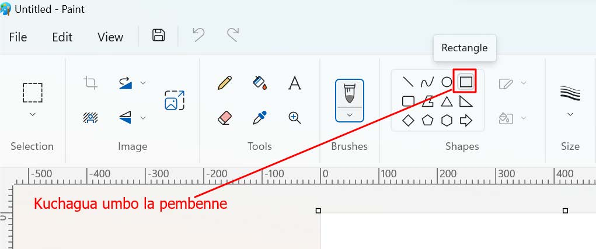

Kuchora na kuunganisha maumbo
Unaweza kuchora maumbo na kuunganisha ili kupata umbo lingine.Kwa mfano, chora mistatili mingi na upange ili kutengeneza ukuta wa matofali.Badala ya kuchora kila mstatili kwa kutumia zana ya mstatili, unaweza kuchora mmoja kisha kuiga na kubandika mara nyingi ili kutengeneza mistatili mingine.Unaweza kutumia rangi kutengeneza miundo kwenye ukuta kama ilivyooneshwa katika Kazi ya kufanya namba 3.
Kazi ya kufanya namba 4: Kuchora ukuta wa matofali wenye rangi tofauti tofauti
Hatua
1.
Chagua zana ya mstatili kwa kubofya kwenye zana ya pembenne ‘Rectangle’.Chunguza Kielelezo namba 13.

Kielelezo namba 13 kinaonesha kuchagua umbo la mstatili.
2.
Chora matofali na upangilie kwa kunyoosha kama ilivyo kwenye Kielelezo namba 14.

Kielelezo namba 14 kinaonesha tabaka la kwanza la ukuta.
3.
Paka rangi ya kijivu na njano kama ilivyo katika Kielelezo namba 15.